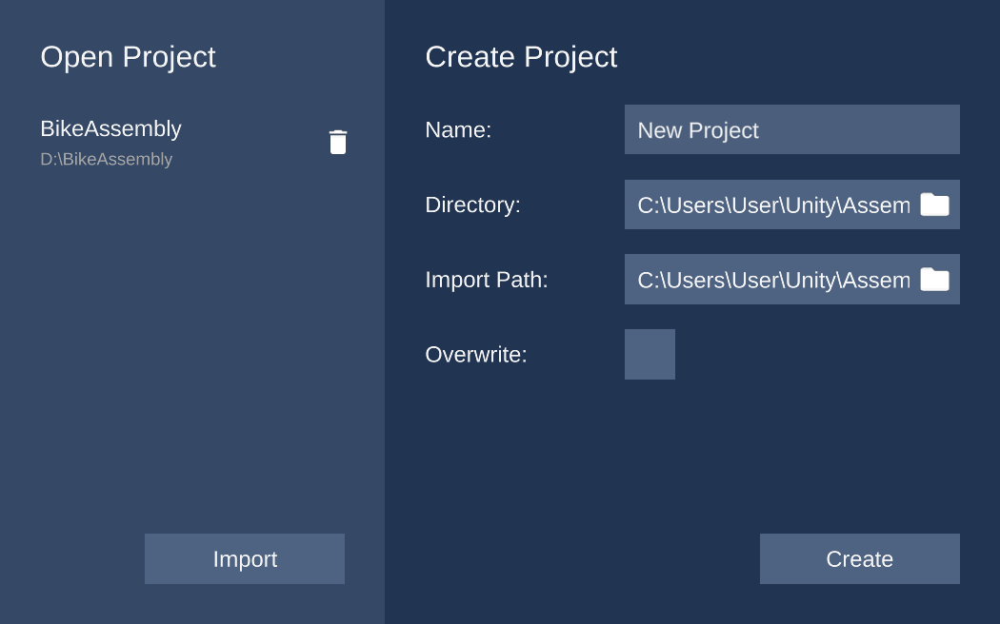
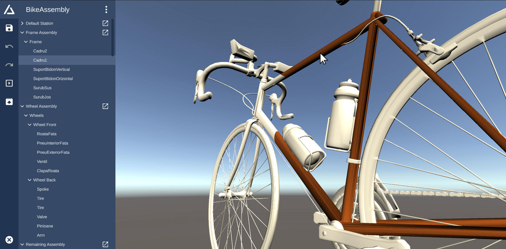
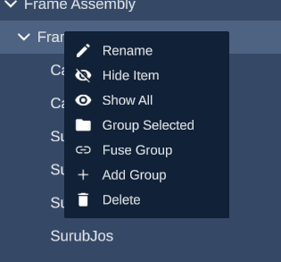
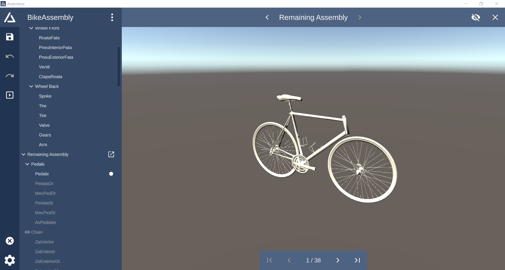
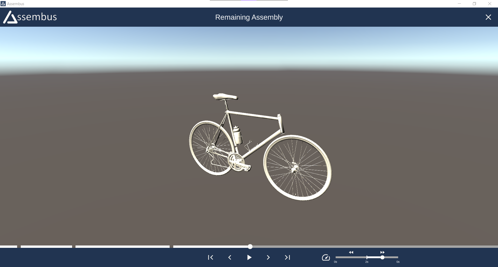

Your first contact with Assembus will be the starting screen. This screen allows you
to create, delete and load projects.
More here.
The heart of Assembus is the editor. The editor allows you to change the order of
the components and provides features like grouping or renaming that help you to
keep an overview.
More here.
A picture is worth a thousand words. That's why Assembus provides a station view
for improved visualization during editing and a cinema mode for showing finished
assembly lines.
More here.
None of the features would be worth anything if the data was stuck in Assembus.
Therefore the created project can be exported for further usage.
More here.
After opening the application you will see the project creation window. At the right-hand side, you can create a new project by entering your preferred project name, a destination where it should be saved, and the .obj-file of your assembled 3D model. Optionally, you can overwrite an existing project at the destination directory. Your project is created after clicking on the "Create"-button.
On the left half of the window you can see previously created projects. You can open them by simply clicking on the project or delete it by clicking on the trashcan-icon. Further, you are able to open projects which are not listed with the "Import"-button.
The 3D preview visualizes all components of the assembled model. You can easily inspect the 3D model by using your mouse. To rotate the object, hold the right mouse button while moving the mouse. The mousewheel can be used to zoom in and out. Additionally, you can change the focus of the camera by double clicking a component of the 3D model or an entry of the hierarchical list. To change the focus without changing the selection you can press Ctrl while double clicking.
If you want to revert any changes you can use the Undo-button in the sidebar navigation. Similarly, you can move one step forward with the Redo-button. Alternatively, both action are mapped to a shortcut: Ctrl+Z to Undo and Ctrl+Y or Ctrl+Shift+Z to Redo.
The editing of your assembly sequence is done in the hierarchical list. The actual assembly sequence is defined by the ordering of the elements inside the hierarchical list. The ordering can be modified by dragging elements. Multiple items can be selected by clicking and holding Ctrl while selecting items in the list. Press Shift to select all items between two boundaries.
By default, all components are located inside the "Default Station". New assembly stations can be created by clicking the overflow-menu in the top and selecting "Create Station". The station will be added as a top-level group. Simply move components into the new station by using Drag&Drop. The separation into stations is used by the Station View. If the station view is open, you can also directly drag components onto the 3D editor to add them to the station.
To keep the project clean and tidy, multiple components can be grouped. You can either right-click on an assembly station and select "Add Group" to create a new empty group or you can select multiple items to be grouped and right click on the selection and select "Group selected" to group the marked components. If you want to abstract pre-built components, you can fuse existing groups by right-clicking on a group and selecting "Fuse Group" to hide all items of the group from the user. Fused groups are marked with a chain icon and their content can be toggled by clicking at the icon.
To rename a component, component group or assembly station, open the context menu with a right-click and select "Rename" to alter the displayed name.
The station view allows to fully assemble and disassemble the 3D model in realtime. It allows you to visualize and understand your built assembly line through the help of the 3D preview. You can use the default mouse navigation to view the 3D model.
To open the station view for a specific assembly station, simply click on the box-pointer-icon of the corresponding station in the list.
Use the skip-arrows on the bottom of the screen to incrementally assemble or disassemble all
components.
The dot-icon and the color highlighting in the hierarchical list indicate which components have
already
been assembled into the final model.
Alternatively you can right-click on a list item and select "Skip To" to jump to the selected
component.
To switch the currently visible station, simply click on the navigation arrows on the top of the
screen.
The name of the currently visible station is displayed on the top of the screen.
By default, all components which have been assembled in previous stations, are hidden to ensure clarity. You can enable visibility of components from preceding stations by clicking the eye-button in the upper right corner of the screen.
The cinema mode offers a movie-like experience to visualize the assembly process and to train assembly personnel. This mode works similar to the station view but is is not intended to apply changes to the assembly line but to solely playback the entire assembly process for employee training.
To open the cinema mode, simply click on the box-triangle icon on the sidebar. The cinema mode screen will appear and start with the very first assembly station. You can skip to the previous or next component with the skip buttons. The assembly speed/delay can be modified with the speed slider right next to the playback control buttons.
Alternatively you can click and drag around the dot indicator which is placed on the progress bar, which is located above the playback controls to go one step back or forth. Each section of the progress bar represents one assembly station. The dot indicator shows the assembly progress inside the current station. To show the name of the assembly station and the amount of components, simply hover the mouse above the desired progress bar section.
The export function allows you to easily export your entire assembly line configuration, which includes all defined assembly stations, component ordering and (fused) component groups.
Assembus exports your assembly line configuration as a simple ZIP file which uses the .bus file-ending. The ZIP directory contains the actual 3D OBJ file and the assembly line configuration which uses the XML meta language to describe the assembly sequence.
To invoke the export, simply click on the box-icon with the upwards arrow, which is located in the sidebar. Specify an export directory and the desired export filename. Finally click the save button to export the Assembus project.
The XML file contains the hierarchy as specified in Assembus,
with an <AssemblyLine> root element.
Since it's not guaranteed, that the OBJ file only contains unique names, the association is
done with an artificial id, specified in the id attribute.
The id for components looks like this: assembus_item_X,
where X is the index of the corresponding item in the OBJ file, starting with 0.
<AssemblyLine>
<Station name="Default Station" id="assembus_group_0">
<Component name="First Part"
id="assembus_item_0"/>
<Component name="Second Part"
id="assembus_item_1"/>
<Group name="First Group" id="assembus_group_1" isFused="true">
<Group name="Inner Group" id="assembus_group_2">
<Component name="Group Part 1" id="assembus_item_3"/>
<Component name="Group Part 2" id="assembus_item_2"/>
</Group>
<Group name="Empty Group" id="assembus_group_3"/>
</Group>
</Station>
<Station name="Assembly Station" id="assembus_group_4"/>
</AssemblyLine>